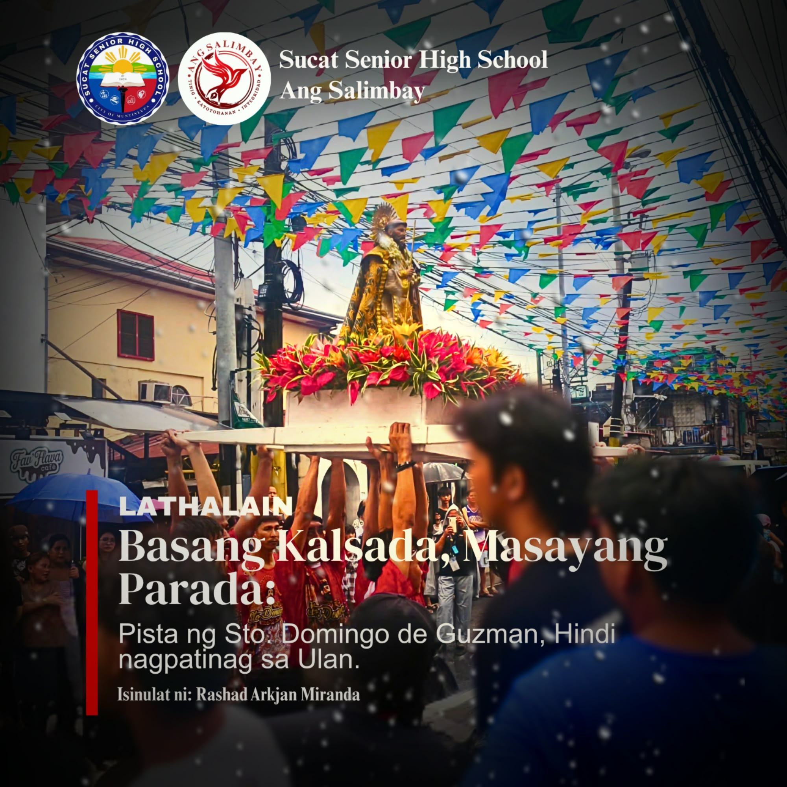

Opisyal na Publikasyon ng Sucat Senior High School
Ang seksyong Lathalain ng Ang Salimbay ay naglalaman ng mga makabuluhang kuwento, tampok na personalidad, malikhaing pagsasalaysay, at mga artikulong nagbibigay-diin sa karanasan ng mga mag-aaral at mga miyembro ng komunidad. Layunin nitong ipakita ang mga kwento sa likod ng mga pangyayari at kilalanin ang mga natatanging boses ng Sucsenian.
